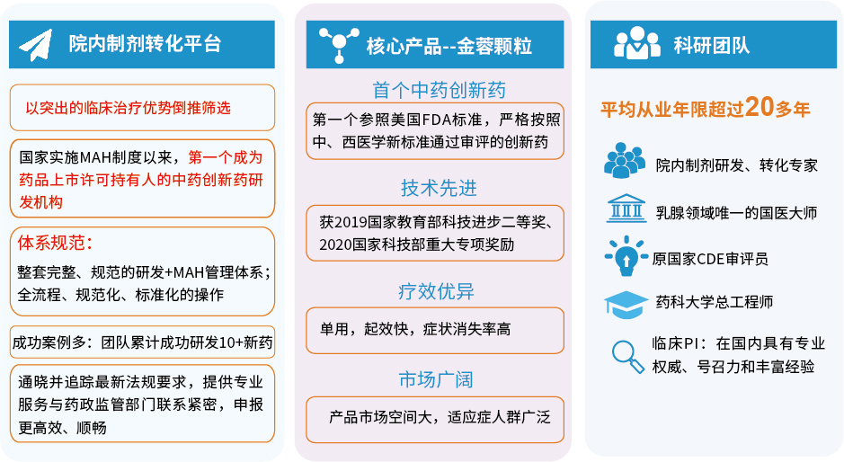
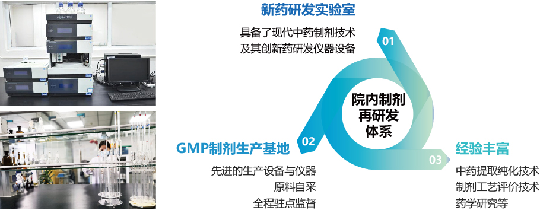

一、科研队伍
首席科学家 林毅
国医大师，首届“全国名中医”；广东省中医院主任医师、一级教授、主任导师；国家中医药管理局以及卫计委乳腺病重点专科学术带头人；“金蓉颗粒”配方发明人。
主要经历和业绩：
林毅提出“六郁理论”治疗乳病。“六郁理论”较其他中医理论而言，不仅更加关注情志致病因素，且其论述病因病机时，更加着眼于脏腑气血等内因作用，适用于乳腺相关疾病的辨证思路。因此，林毅教授在系统继承历代医家郁证学说精华的基础上，结合多年临床体会，拓展了郁证学说在乳腺病中的运用，创立了“六郁治乳”理论，对中医治疗乳腺病进行了系统阐述，现将该理论用于乳病的临床辨治情况整理并阐释如下，以飨同仁。
首席药学专家 李顺祥
负责金蓉颗粒的临床前研究，参与临床样品的生产和技术指导。
主要经历和业绩：
博士，湖南中医药大学二级教授、研究员，博士生导师；湖南省中药活性物质筛选工程技术研究中心主任；湖南省医学学科领军人才；国家中医药管理局药用植物学重点学科带头人；中华中医药学会中药化学分会副主任委员；发表论文220篇，出版（主编/参编）著作9部；中国发明专利授权9项；湖南省科学技术进步奖6项。
联合开发单位：
广东省中医院(广东省中医药科学院、广州中医药大学第二附属医院、广州中医药大学第二临床医学院)
广东华南新药创制中心
湖南中医药大学
二、兼具“平台+团队+产品”的多方位优势
三、中药院内制剂再研发体系：MAH管理体系+研发管理体系
1、已经建立起了一整套完整、规范的研发管理体系和MAH管理体系
2、拥有中药创新药研究开发整个链条全流程所需要的经验和渠道资源